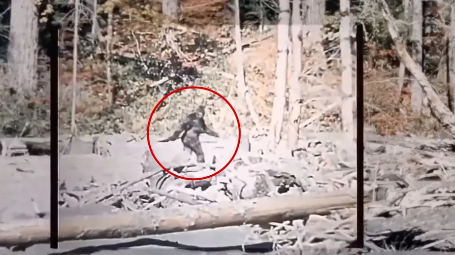
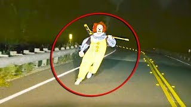

Um Ovni avistado no céu do Mato-Grosso. O adolescente de 18 anos chamados Lucas, avistou a nave passando pelo céu perto da sua residência
Um Ovni avistado no céu do Mato-Grosso. O adolescente de 18 anos chamados Lucas, avistou a nave passando pelo céu perto da sua residência

Um Pé Grande foi avistado na floresta de Boa Vista em Roraíma. Um casal que estava na região avistou a besta, que apareceu e depois correu para dentro da mata.

Um Palhaço assassino foi visto em João Pessoa, na Paraíba. O palhaço foi avistado perseguindo uma garota de 20 anos chamada Ana na br-230, a garota conseguiu fugir e despitar o palhaço. Depois disso, o palhaço sumiu do mapa.